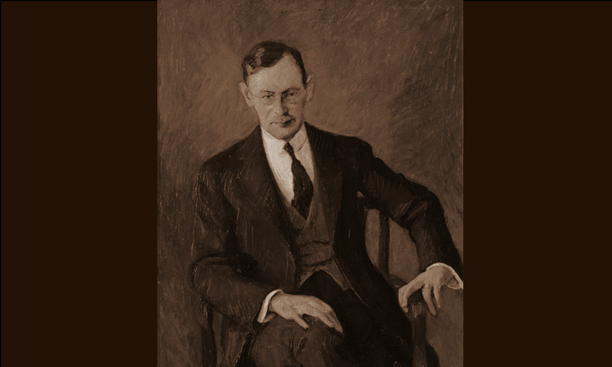

Geiger
Venezia

- PERSONA
- Benno Geiger, 1882–1965, antiquario
- IN CATALOGO
- Opere transitate, catalogo della Fondazione Zeri →
Benno Geiger (1882-1965) nacque a Vienna da nobile famiglia e, dopo la laurea con una tesi sul pittore seicentesco veneto Maffeo Verona, discussa con Heinrich Wölfflin a Berlino nel 1910, fu assistente di Wilhelm von Bode presso il Kaiser Friederich Museum. Fu una personalità multiforme di intellettuale, dedito non solo agli studi storico artistici ma anche alla poesia, alla traduzione, alla musica.
Il suo archivio, contenente appunti, fotografie, documenti e soprattutto lettere, è conservato presso la Fondazione Vittorio Cini di Venezia e restituisce una figura di intellettuale ben inserito nel gotha europeo di primo Novecento.
Nella sua autobiografia "Le Memorie di un veneziano", del 1958, a essere valorizzato è il suo ruolo di pensatore, artista, studioso, mentre quello di mercante appare minimizzato, se non celato, dietro l’alibi della pura passione intellettuale e collezionistica, nutrita per Alessandro Magnasco e per altri pittori ‘irregolari’ come Giuseppe Arcimboldi e Antonio Carneo. Nella monumentale monografia su Magnasco del 1949 Geiger si attribuì, insieme a Italico Brass, il merito di tale riscoperta e della rivalutazione di una scuola fino ad allora negletta dai musei, dai collezionisti e da tutti gli antiquari italiani.
Il centro dei suoi affari fu sempre Venezia, dove si stabilì definitivamente alla metà degli anni Dieci dopo l’abbandono dell’incarico al Kaiser Friederich. Dalla città lagunare si mosse in perlustrazione delle principali raccolte genovesi, nazionali e internazionali alla ricerca di tele di Magnasco per sé e per collezionisti come il già citato Brass o antiquari come Arthur Sambon che, a Parigi nel 1929, organizzò un’importante esposizione dedicata al genovese.
Geiger fu anche in rapporti con il maggiore riproduttore di opere di Magnasco, il pittore aretino Angelo Visoni, come documentano tra l’altro fotografie di falsi conservate nel suo archivio. Fu anche coinvolto, insieme a Luigi Albrighi, nella vendita del falso Botticelli di Umberto Giunti ad Arthur Hamilton Lee nel 1930.
Bibliografia essenziale
- Cavicchi, M. (2017), Falsi di primo Novecento nell'archivio di Luigi Albrighi, In Ottani Cavina, pp. 199-225
- Rowlands, E.W. (2023), Here, There, and Everywhere': Harold Parsons, the Italian Market and a Letter of 1948, In Budd, Catterson, pp. 329-407